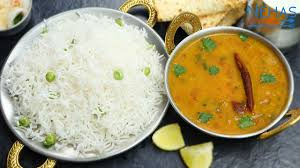

|

|
સામગ્રી:
- 1 કપ તૂવર દાળ
- 1 ડુંગળી (ચીણેલી)
- 1 ટમેટું (ચીણેલું)
- અદ્રક-લસણ પેસ્ટ - 1 ચમચી
- હળદર - 1/4 ચમચી
- મીઠું - સ્વાદ મુજબ
- હિંગ, રાઈ, જીરું - તડકા માટે
- લાલ મરચું પાઉડર - 1/2 ચમચી
- ઘી અથવા તેલ - 2 ચમચી
બનાવવાની રીત:
- તૂવર દાળ ને ધોઈને 2 કપ પાણીમાં કુકરમાં 3 સીટી સુધી ઉકાળો.
- પેનમાં ઘી ગરમ કરી હિંગ, રાઈ, જીરું નો તડકો આપો.
- અદ્રક-લસણ પેસ્ટ અને ડુંગળી ઉમેરી બ્રાઉન કરો.
- ટમેટાં, હળદર, મરચું અને મીઠું ઉમેરી બરાબર રાંધી લો.
- તેમાં ઉકાળેલી દાળ ઉમેરો અને જરૂર મુજબ પાણી ઉમેરો.
- 5-7 મિનિટ ઉકાળ્યા પછી ગરમ ગરમ પરોસો.
વિડીયો જુઓ:
દાળ ફ્રાય બનાવવાની વિડીયો
|